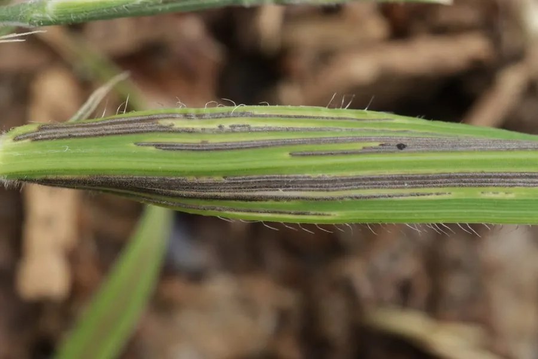

真菌 · 真菌界
小麦网腥黑穗菌 Tilletia caries

小麦网腥黑穗菌侵染小麦子房，形成充满黑褐色孢子粉的病粒，带有鱼腥味，是重要的检疫性病害，可造成小麦减产。
- 分类
- 门担子菌门纲外担菌纲目腥黑粉菌目科腥黑粉菌科属腥黑粉菌属
- 栖息环境
- 小麦的子房内，随种子和土壤传播，低温高湿时发病重
- 地理分布
- 世界各小麦产区，中国北方麦区有发生
- 保护级别
- 暂无评估（IUCN 未评估，植物病原真菌）
物种志
小麦网腥黑穗菌是担子菌门腥黑粉菌科的真菌，侵染小麦后，病菌在子房内发育，把整粒麦子变成一个菌瘿（病粒）。病粒比正常麦粒略短粗，外被灰褐色薄膜，内部充满黑褐色的冬孢子粉末，破裂后散发出鱼腥味，这是它得名“腥黑穗”的原因。冬孢子球形，表面有网纹，因此称“网腥”。
小麦网腥黑穗菌以冬孢子附着在种子表面或混在土壤中越冬，小麦播种后萌发，菌丝侵入幼苗，随植株生长进入穗部，最终在子房内形成新的病粒，完成一个生长季的循环。病害在低温、土壤湿度大的条件下发生较重，可造成明显减产，并影响面粉品质。它是重要的植物检疫对象，防治上主要采用药剂拌种、使用无病种子和轮作，发现病株要及时拔除销毁。
形态与习性
- 寄主小麦，侵染子房形成病粒
- 病粒比正常麦粒短粗，内有黑褐色孢子粉
- 气味破裂后散发鱼腥味
- 冬孢子球形，表面有网纹
- 传播孢子附在种子表面或混入土壤
- 危害造成小麦减产，影响面粉品质
- 防控药剂拌种、无病种子与轮作
趣味知识
- 病粒破裂后会散发鱼腥味，这是“腥黑穗”名字的由来。
- 冬孢子表面有网状纹路，所以叫“网腥黑穗菌”。
- 病菌在苗期侵入小麦，直到抽穗才在麦粒里显现。
- 它是检疫性病害，防治主要靠药剂拌种和用无病种子。